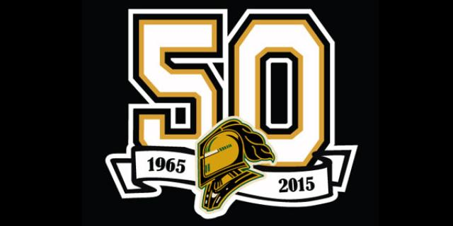
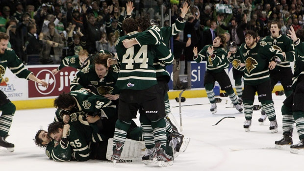

London Knights 2015
2015 Season
6 November 2015
-
28 May 2016

London Knights
Team Info
Search:
Knights Website
Roster
Schedule
2 out of 10
Champions

The copyright of this image is owned by the London Knights
Budweiser Gardens
Go Knights Go!